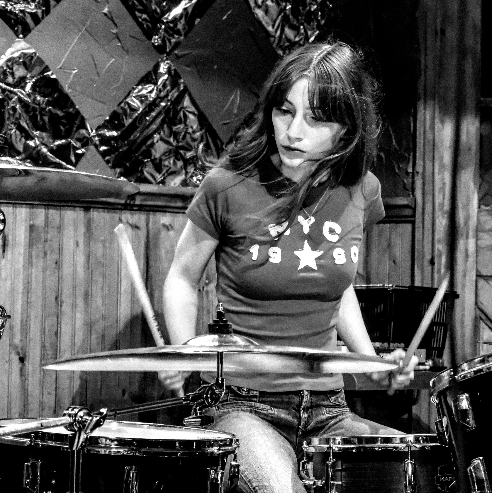
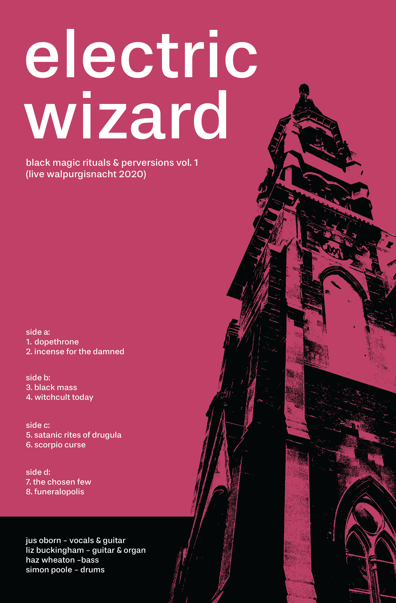
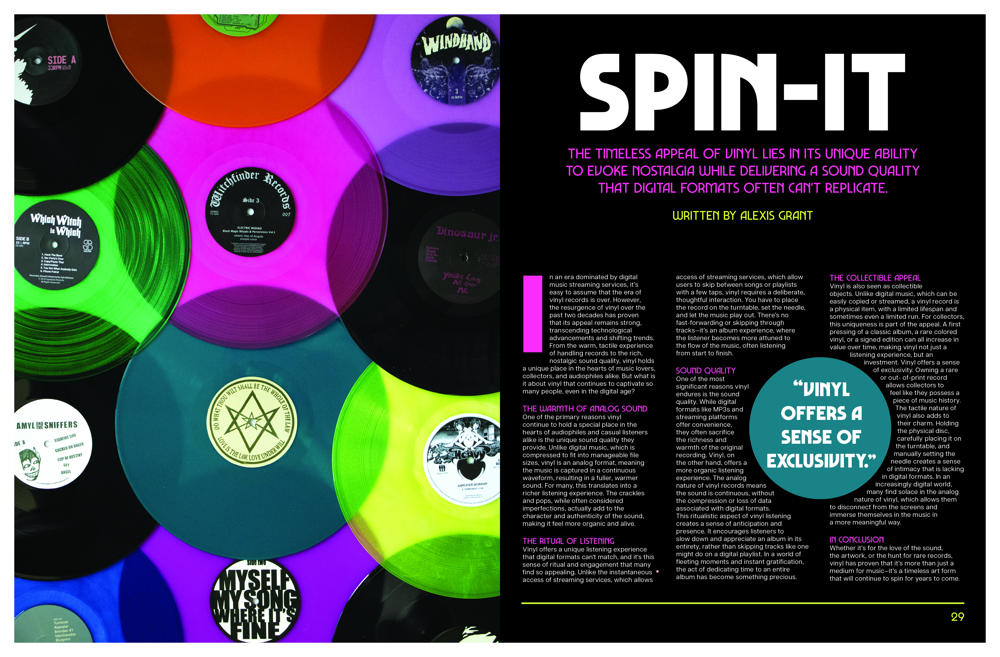
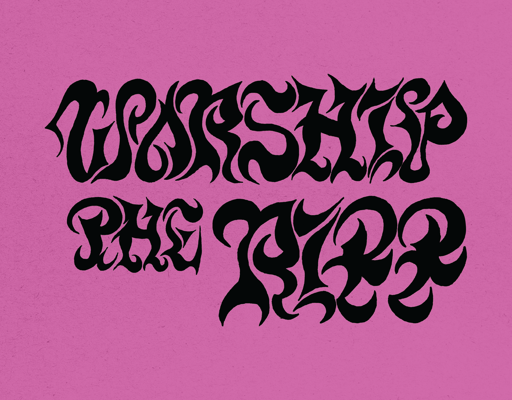

My name is Alexis Grant and I am a year-one graphic design student at NSCC. I love to bring my ideas to life through bold visuals in my design work. I specialize in design related to music and vinyl, where I draw inspiration from gritty textures and the raw energy of punk and stoner rock.


